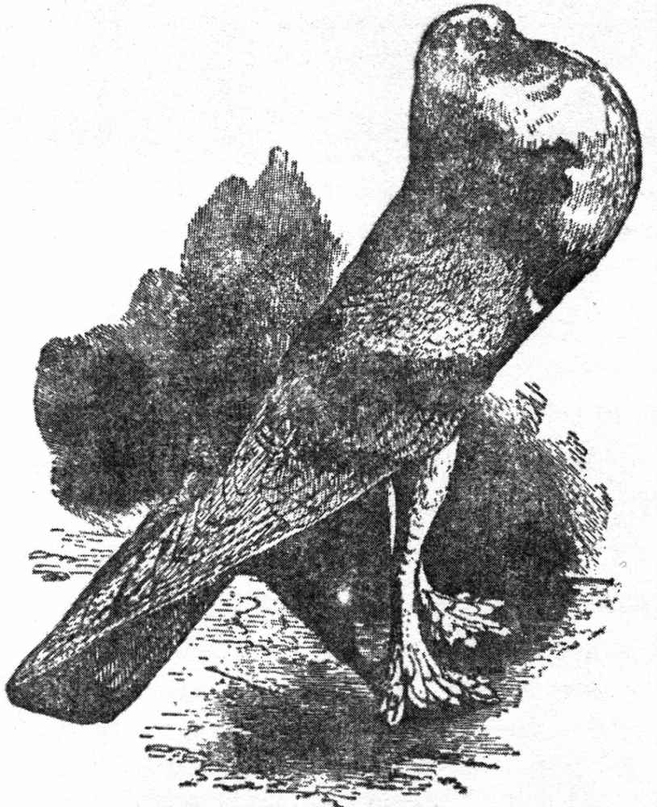

第一群
这一群只包含一个族，即突胸鸽。如果拿特征最显著的亚族——“改良的英国突胸鸽”为例，那么，这恐怕是所有家鸽中的一个最不同的品种。
第一族 突胸鸽（德文为Kropftauben，法文为Grosses-gorges或boulans）
食道大而且同嗉囊几乎没有分开，常常膨胀。体和腿长。喙大小中等。
第一亚族：改良的英国突胸鸽 当它的嗉囊充分膨胀起来的时候，便呈现了一种确可令人惊奇的外观。嗉囊稍微膨胀的习性是一切家鸽所共有的，不过在突胸鸽中这种习性发展到了极端。它的嗉囊除了大小以外，同其他鸽子的嗉囊并无差异；不过它的食道以斜缩肌（oblique constriction）同嗉囊分开的情形不如其他家鸽显著。食道上部的直径非常大，甚至接近了头部。我有一只突胸鸽，当它的食道充分扩大起来时，它的喙几乎完全被埋没了。雄鸽比雌鸽更能膨胀，特别是当它激动时更加如此；而且雄鸽夸示它的这种能力。如果一只鸽子，用术语来说，不“玩把戏”，养鸽者可以像我亲自看见的那样，把它的喙放在他的嘴里吹气，把它吹得像一只气球，于是这只鸽子便由空气和骄傲而膨胀起来，大摇大摆地走来走去，尽量把它的巨大体积保持到最长的时间。突胸鸽常常在嗉囊膨胀起来之后才开始飞翔。我的一只突胸鸽当饱餐了一顿豌豆和水之后，它便飞起以便吐出这些食物去喂它的刚刚生出羽毛的雏鸽，这时我听到在膨胀起来的嗉囊中的那些豌豆就像在浮囊中一样地嘎啦嘎啦乱响。当飞翔时，它们的两只翅膀的背面常常互相拍打，这样便弄出了啪哒啪哒的声响。
突胸鸽当站立时是非常笔直的，它们的体部细而长。同这种体部形态有关的是，它们的肋骨比其他品种的较宽，而椎骨也多得多。从它们的站立姿势看来，它们腿似乎比实际的情形长一些，虽然同岩鸽的腿比较起来，它们的腿和脚实际上是比较长的。翅膀显着非常细长，但根据测计，按照体长的比例来说，它们并不长。喙也同样地显着比较长，但按身体大小的比例以及同岩鸽的喙的比较来说，其实它的喙还是比较短一点（约短0.03英寸）。突胸鸽虽然不是庞大的，但可以说是一种大型的鸟；我曾测计过一只；从翅膀的这一端到那一端为34.25英寸，从喙端到尾端为19英寸。谢特兰岛的一只野生岩鸽从翅膀的这一端到那一端仅为28.25英寸，从喙端到尾端仅为14.75英寸。突胸鸽有许多不同颜色的亚变种，这里都略而不谈。
第二亚族：荷兰突胸鸽 这似乎是改良英国突胸鸽的祖先类型。我养过一对，但我怀疑它们不是纯系的。它们比英国突胸鸽较小，而且在一切性状上都较不发达。纽美斯特（Neumeister）[1]说道，它的两个翅膀横遮尾部，而没有达到尾的末端。

图18 英国突胸鸽
第三亚族：里尔（Lille）突胸鸽 我只是从文献上得知这个品种[2]。它在一般形态上接近荷兰突胸鸽，不过它的膨胀的食道是球形的，好像吞下了一个大柑橘，这个大柑橘正位在喙的下面。据说这个膨胀的球可以上升到头顶的水平。只有中趾被有羽毛。包尔塔和考尔比描述过这个亚族的一个变种——喝彩鸽（Claquant）；它膨胀得不大，但有在背上激烈拍打翅膀的习性，这是它的特色；英国突胸鸽也有这种习性，不过程度较轻。
第四亚族：普通德国突胸鸽 我只是从准确的纽美斯特所提出的绘图和描述中知道这种鸽子的；我发现在鸽子研究中他是永远可以信赖的少数作者之一。这个亚族似乎是相当不同的。它的食道上部膨胀得很少。站立的姿势比较不笔直。脚不被羽毛，腿和喙较短。在这些方面它同普通岩鸽的形态是接近的。尾羽很长，而翅膀收起来的时候，其末端超出尾端之外；翅膀从这一端到那一端的长度以及体部的长度都比英国突胸鸽的为长。
[1] 《鸽的饲养》（Das Ganze der Taubenzucht），魏玛（Weimar）著，1837年，第11和12图。
[2] 包依塔和考尔比：《鸽》（Les Pigeons）等，第177页，第6图。